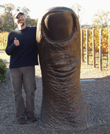

The Hahn Lab
Distinguished Professor
Matthew Hahn
mwh@iu.edu
Department of Biology and
Department of Computer Science
Indiana University
1001 E. Third St.
Bloomington, IN 47405
Office: 249 Biology Building
Phone: (812)856-7001
Director, Center for Genomics and Bioinformatics

Postdoctoral researchers
Isaac Miller-Crews
Ph.D., University of Texas
imillerc@iu.edu
Graduate Students
Yu Mo
Computer Science Ph.D. program
moyu@iu.edu
Lab alumni
- Yadira Peña-García (Ph.D. 2020-2025)
Postdoc, Yale University - Ben Rosenzweig (Ph.D. 2015-2025)
US Navy - Daniel Rickert (Postbacc 2023-2025)
Ph.D. student, UNC-Chapel Hill - Drew Larson (Postdoc 2022-2025)
Postdoc, University of Edinbrugh - Lara Breithaupt (Undergrad 2021-2024)
Ph.D. student, Massachussetts Institute of Technology - Megan Smith (Postdoc 2020-2023)
Assistant Professor, Mississippi State University - Farzaneh Behzadnia (M.S. 2021-2023)
Bioinformatics scientist, IU School of Medicine - Jason Bertram (Research Fellow 2019-2022)
Assistant Professor, Western University - Mark Hibbins (Ph.D. 2017-2022)
Assistant Professor, University of Rochester - Samer Al-Saffar (M.S. 2020-2022)
Bioinformatics analyst, Bionano Genomics - Christine Picard (Sabbatical visitor, 2021)
Associate Professor, IUPUI - Jelena Nguyen (B.S. 2018-2021)
Software engineer, JP Morgan Chase - Dan Vanderpool (Postdoc 2018-2021)
Bioinformatician, US Forest Service - Rafael Guerrero (Postdoc 2013-2020)
Assistant Professor, NC State University - Gregg Thomas (M.S. 2011-2013; Ph.D. 2013-2019)
Bioinformatics scientist, Harvard University - Jeff Adrion (Ph.D. 2012-2018; co-advised with Kristi Montooth)
Population geneticist, Ancestry.com - Fábio Mendes (Ph.D. 2013-2018)
Assistant Professor, Louisiana State University - Geoffrey House (Ph.D. 2012-2017; co-advised with Jim Bever)
Aquatic ecologist, National Ecological Observatory Network - Syed Hussain Ather (B.S. 2013-2017)
Ph.D. student, University of Toronto - Simo Zhang (Ph.D. 2011-2016)
Bioinformatics scientist, Personalis - Yoonsoo Hahn (Sabbatical visitor, 2015-2016)
Professor, Chung-Ang University - James Pease (Ph.D. 2010-2015)
Associate Professor, The Ohio State University - Melissa Toups (Ph.D. 2008-2014)
Assistant Professor, University of Louisiana at Lafayette - Rodrigo Ramalho (Postdoc 2012-2014)
Researcher, Laboratório Fleury, Brazil - David Haak (Postdoc 2010-2014; co-advised with Leonie Moyle)
Associate Professor, Virginia Tech - Luting Zhuo (M.S. 2012-2014)
Bioinformatics programmer, Gilead Sciences - Tami Cruickshank (Postdoc 2013)
- Johnny Hourmozdi (B.S. 2010-2013)
Cardiology Fellow, Northwestern University - Jimmy Denton (M.S. 2011-2013)
Bioinformatics analyst, Cincinnati Children's Hospital - Dan Schrider (Ph.D. 2007-2012)
Associate Professor, University of North Carolina-Chapel Hill - Claudio Casola (Postdoc 2007-12)
Associate Professor, Texas A&M University - Mira Han (Ph.D. 2006-11)
Associate Professor, UNLV - Nathan Nehrt (M.S. 2008-10)
Data analyst, Centerstone Research Institute - Carrie Ganote (B.S. 2008-10)
Ph.D. student, Indiana University - Jen Buhay (Postdoc 2006-07)
Precision medicine program manager, McKesson - Sang-Gook Han (M.S. 2005-07)
- Jeff Demuth (Postdoc 2005-07)
Associate Professor, UT-Arlington